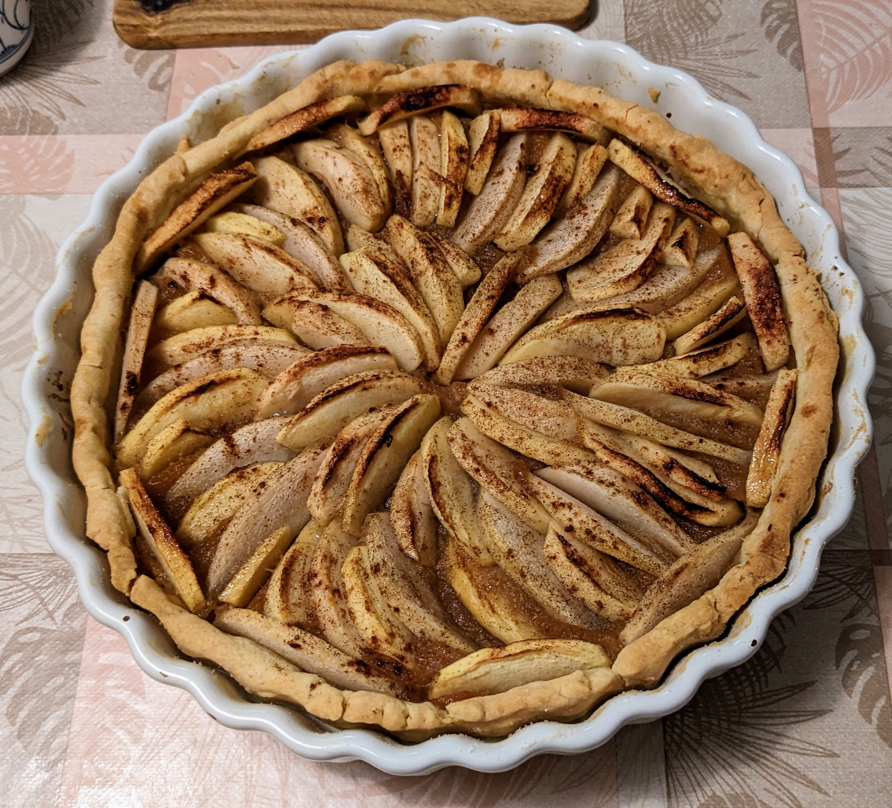

Tarte aux pommes

Pour une tarte :
- Une pâte brisée, ou feuilletée
- Environ 250g de compote de pommes (ou un peu plus, un peu moins…)
- Un demi-citron
- (Facultatif) Une cuillère à soupe de sucre roux
- (Facultatif) Une cuillère à soupe de cannelle
- Faire préchauffer un four à 180°C. Disposer la pâte sur un moule à tarte, la piquer à la fourchette partout, puis la faire chauffer à blanc (avec des billes de cuisson ou des morceaux de papier alu, pour éviter que les bords ne se tassent) un quart d'heure, jusqu'à ce que ça commence juste à changer de couleur.
- Pendant ce temps, laver ou éplucher les pommes, enlever leur trognon, et les couper en tranches fines. Les asperger de citron pressé pour éviter qu'elles ne noircissent.
- Étaler la compote sur le fond de la pâte chauffée à blanc, puis disposer les pommes de l'extérieur vers l'intérieur, pour que ça soit joli. Saupoudrer le tout de sucre et de cannelle.
- Enfourner une petite demi-heure, jusqu'à ce que les bords aient l'air dorés, et que les pommes aient l'air cuites.
Retour à la liste des recettes